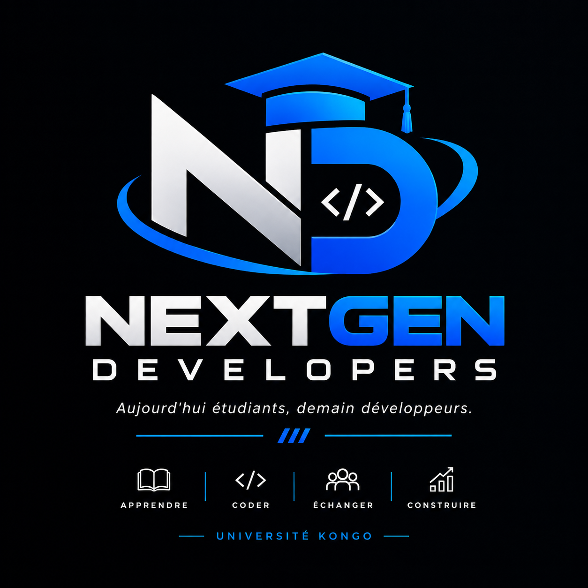

Apprendre
Les bases solides, les bons réflexes et la liberté de poser toutes les questions.
Groupe d'encadrement · Université Kongo
Un espace pour transformer la curiosité en compétences, et les idées en projets qui comptent.

Aujourd'hui
étudiants.
Demain
développeurs.
Next Gen Developers est le groupe d'encadrement qui fait circuler les savoirs, les pratiques et l'envie de bâtir.
Nous créons un cadre où chaque étudiant peut apprendre à son rythme, trouver sa voix technique et s'entourer de personnes qui avancent dans la même direction.
Pas de parcours figé. Une dynamique collective qui transforme chaque étape en mouvement.
Les bases solides, les bons réflexes et la liberté de poser toutes les questions.
De la première ligne de code à l'architecture d'une solution qui tient la route.
Partager les méthodes, les erreurs et les idées qui font progresser tout le groupe.
Donner une forme concrète aux problèmes que nous voulons résoudre ensemble.
Chaque atelier est une invitation à passer de « je ne sais pas encore » à « regardez ce que j'ai construit ».
Fondations
Découvrir les outils, les concepts et les langages qui ouvrent les portes du développement.
Pratique
Expérimenter en équipe, résoudre des défis et apprendre à livrer une solution.
Impact
Faire émerger des projets utiles, documentés et prêts à continuer leur histoire.
Les projets sont notre laboratoire : un espace pour tester, collaborer et laisser une trace.
Des prototypes qui rapprochent les besoins du terrain et les solutions numériques.
Voir naître le prochainUne approche concrète pour rendre les concepts vivants et partageables.
Les ressources et les retours d'expérience qui accélèrent chaque progression.
La suite s'écrit ensemble
Rejoins une communauté qui apprend en construisant, et construis en partageant.
Rejoindre le groupe